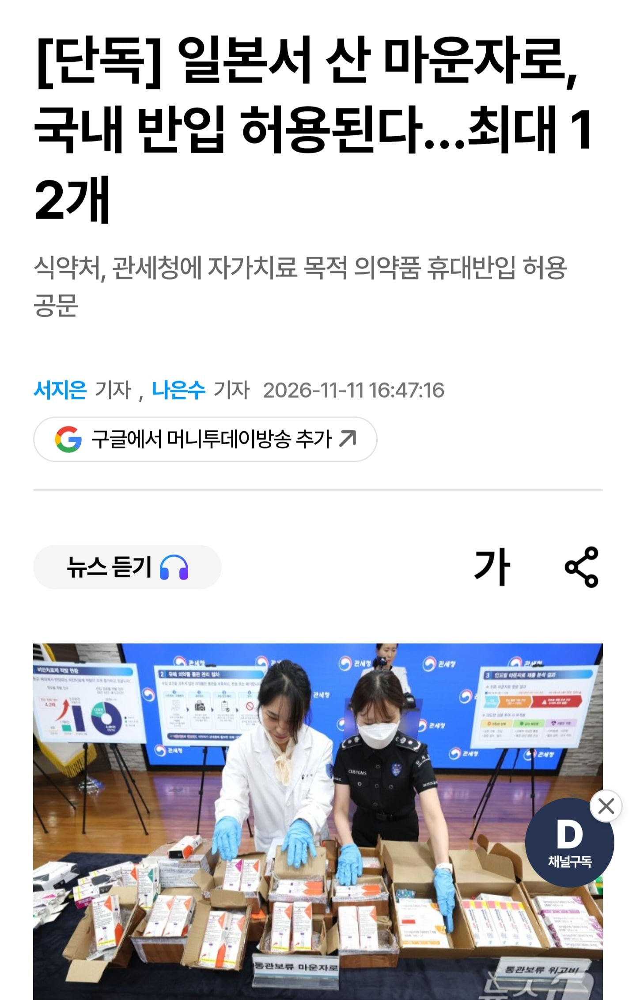
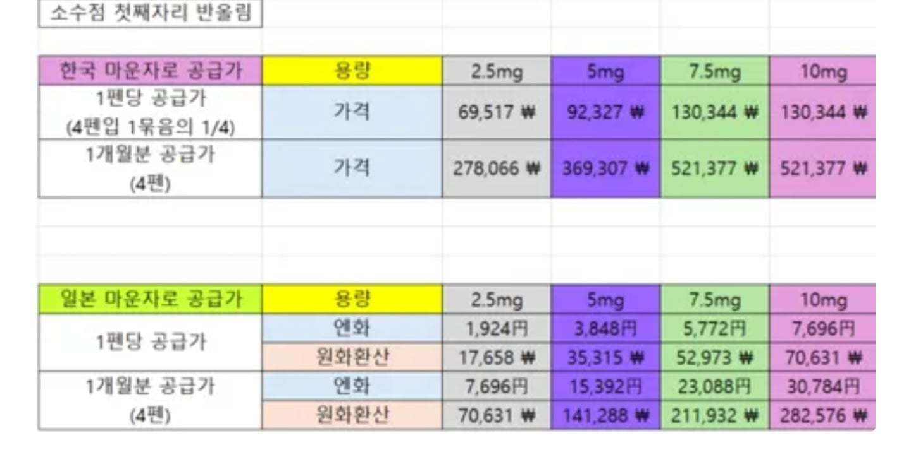

2.5펜 30주고 맞던거 이제 일본에서 7만원대에 사올수 있음
쑤아리질러


2.5펜 30주고 맞던거 이제 일본에서 7만원대에 사올수 있음
쑤아리질러
그걸로 관광 영업한지는 좀 됐음
넘쳐흐름
x나 인스타쪽 여행목적지별로 검색하면 잔뜩 나오고
라인으로 비대면 진료 후 예약일 방문해서 수령하면 끝
일본여행도 가고 겸사겸사 처방도 받고 개꿀이네 ㄷㄷ
그러면 저거 어떻게 처방 받음??
내가 가는 피부과 마운자로 5미리 2~6개월치 사면 한달치에 1.35만엔임
존나싸네
국감에서 대놓고 니새끼들 돈받아먹었냐 수준으로 쳐맞더니 바로 풀어버리네 ㅋㅋㅋㅋ
이럼 진짜 그동안 돈받아서 막은거 잖아 ㅋㅋ
이렇게 ㅅㅂ 쉽게 되면서 올해 초부터 그 야랄을 떨었다고? 마약까지 통과시켜가면서?! 얼마나 윗줄에 약을 쳤는지 감도 안 옴
일본에서 사려고 해도 처방전 있어야 하잖아. 처방 잘해주는 맛집병원이 있나